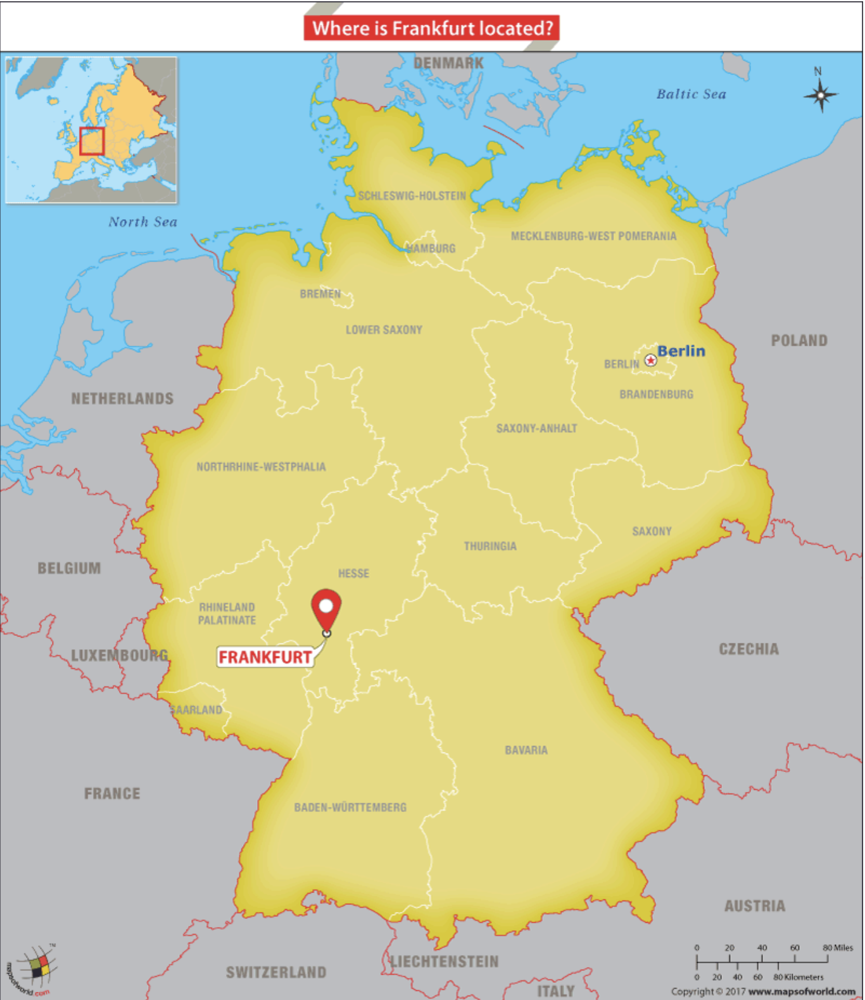

Let's go to Frankfurt
Where is Frankfurt?
Frankfurt is located in southern Germany. The city has a very diverse population, as well as a rich history.
Places to see:
1. Römerberg
This was the citys old town center. It is known for being quite picturesqe and being very active.
2. Eschenheim Tower
This tower was built in the early 1400's and is still standing today at 47 meters (154 feet). Come on over to the cafe and enjoy ther sight.
Some restaurants in Frankfurt
1. African Queen Restaurant
Located in Frankfurt this restaurant serves Ethiopian cuisine. It is open from 12 am to 11 pm, while take-out is from 2-10 pm.

2. Maintower Restaurant and Lounge
Come for delicous food and a great view on the 53rd floor. It's open from 6pm to 12am.